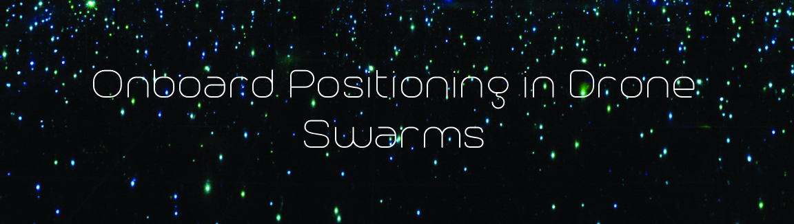

The aim of this project was to allow relative positioning in drone swarms in indoor and outdoor environments without requiring external sensors or externally generated signals. It utilises a small hardware attachment consisting of an ATMega64 microcontroller and a WiFi transceiver. The microcontroller runs a Gaussian Mixture Model[1] to estimate the distances from transceievers on other drones in the swarm and triangulate it's relative position. Since the microcontroller is connected to the rotor control assembly, it allows the swarm to execute complicated maneuvers autonomously with a reasonable degree of precision. The future prospects of this project are immense since the drones will have the ability to communicate over the network permitting incredible applications like fleet-like behaviors, autonomous hurdle avoidance, and performing complicated tasks like construction or aerial assessment of a region (by using a GPS module on a single drone in the fleet). [1] Gaussian Mixture Model. Thanks to my friend Shreyas Kapur for this idea! P.S. He's awesome, go check out his website.
